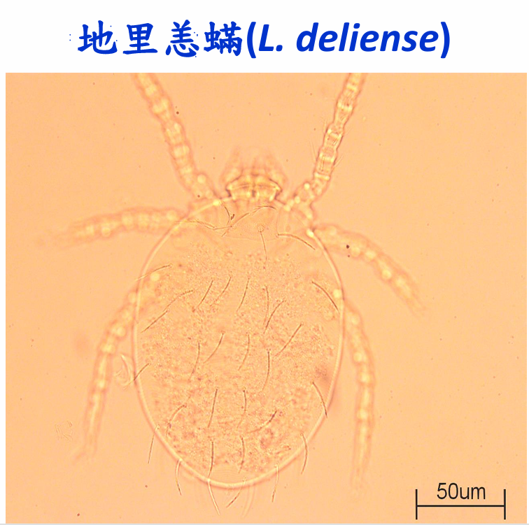
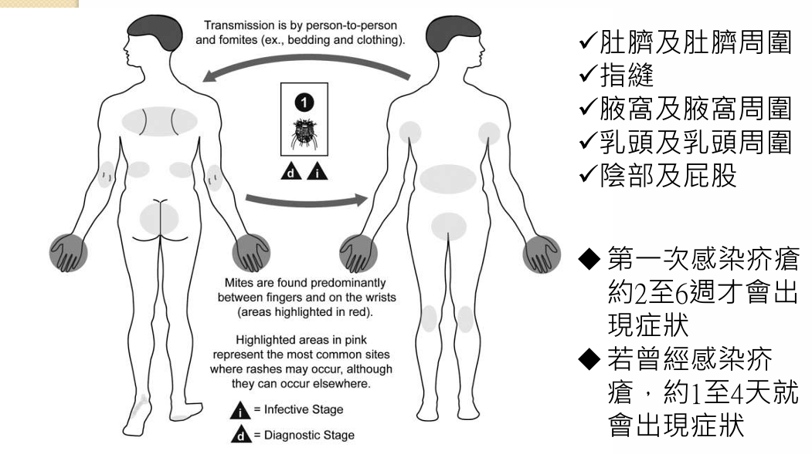
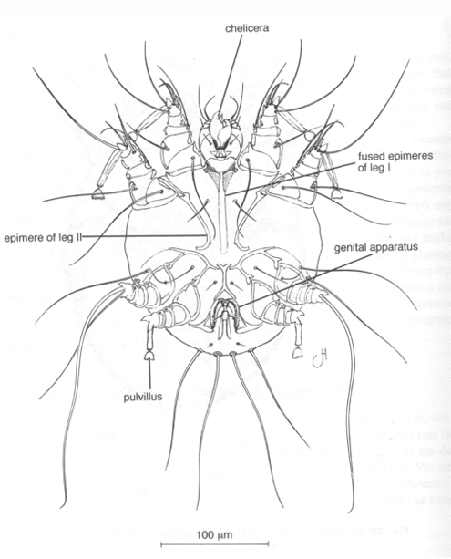
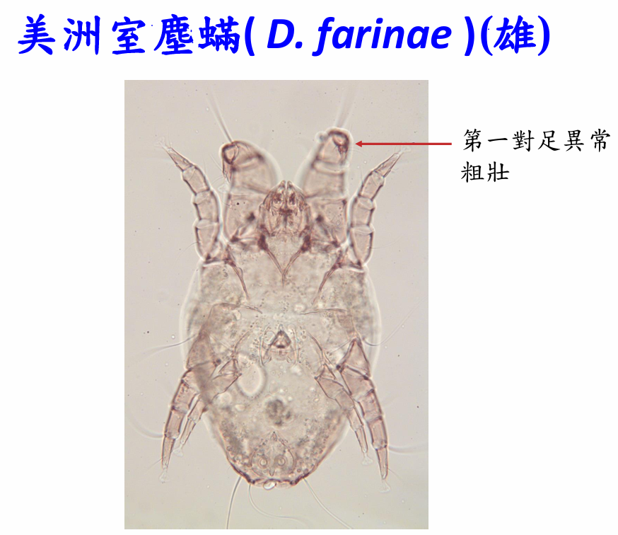
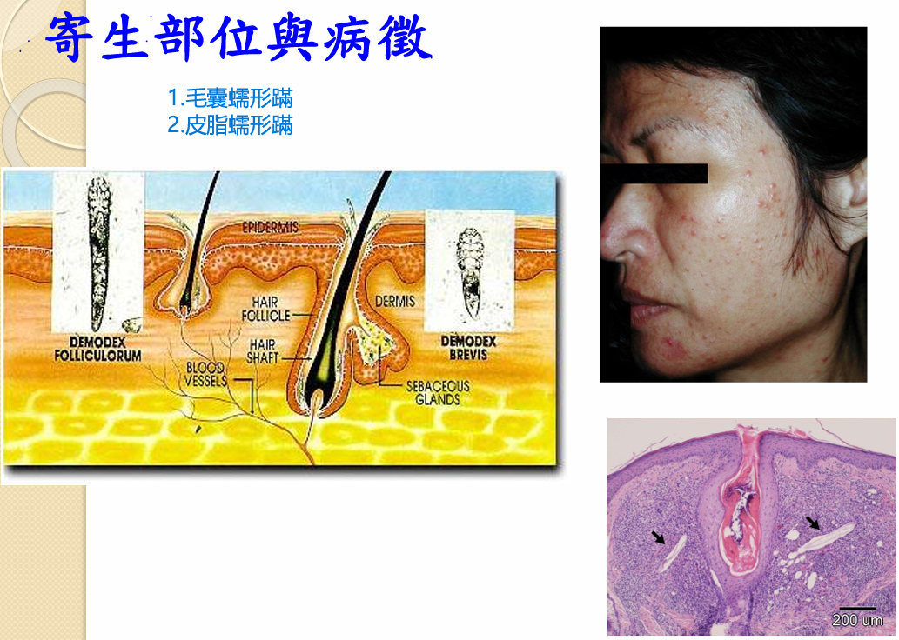
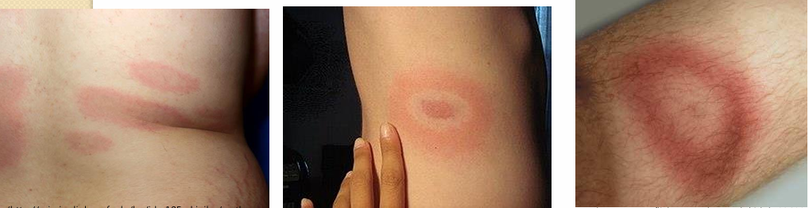
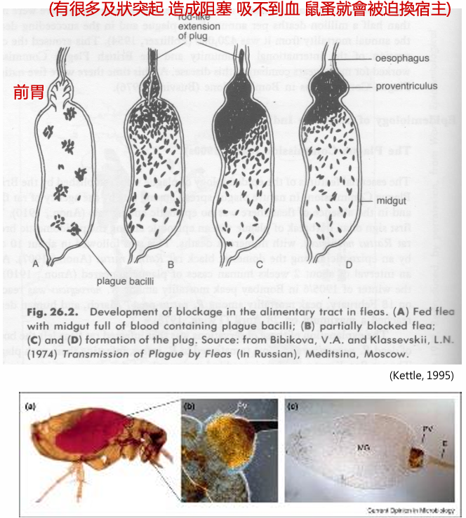
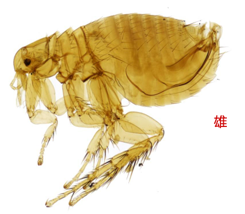
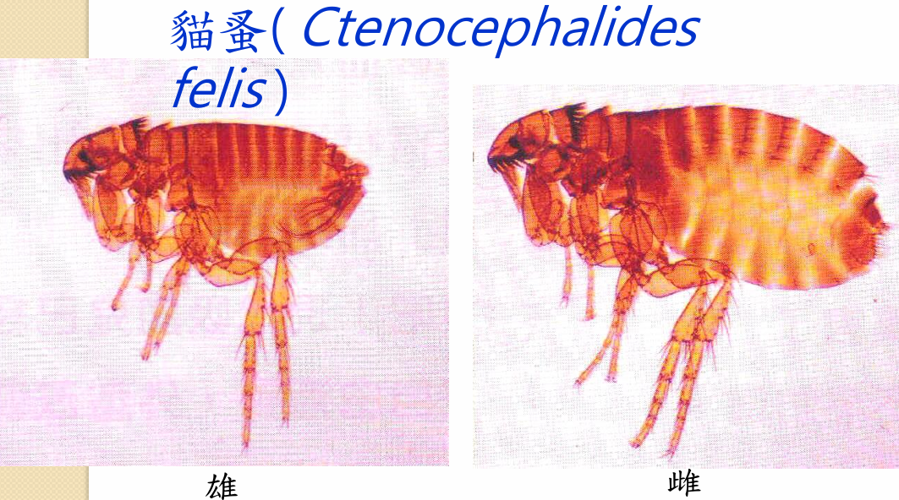
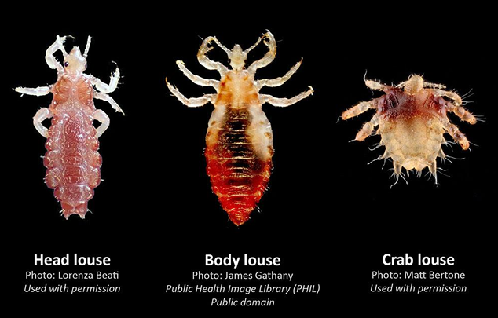

病媒管制 Vector Control・Week 02
蜱蚤蝨蟎之生態及其防治
蟎・蜱・蚤・蝨:病媒、傳染途徑、疾病與防治
依 1151023 講義整理(王錫杰)・個人學習筆記,非官方教材
學習目標:蟎引起的疾病與病媒
- 恙蟲病——恙蟎;疥瘡——疥蟎
- 過敏——塵蟎;皮膚炎——蠕形蟎
- 皮膚被叮癢——熱帶禽蟎
- 再看蜱、蚤、蝨各自傳播哪些疾病
- 每類都問:台灣有哪些病媒?怎麼傳染?有哪些病?怎麼防治?
恙蟲病:流行與感染途徑
- 高溫潮濕雜草處,小哺乳動物與恙蟎形成流行島 (typhus island)
- 恙蟎會經卵傳遞病原體;只有幼蟲叮咬
- 幼蟲吸組織液,唾液傳病原;多叮皮膚柔軟處
- 人是偶然宿主,不會人傳人
- 高雄 114 年確定 11 例;柴山每年約 10 多例,5 月高峰
恙蟲病:病原與臨床
- 病原 Orientia tsutsugamushi:專性細胞內寄生,對四環黴素、氯黴素敏感
- 潛伏期 10–12 天(6–21);50–80% 螫口有無痛焦痂
- 發燒 ≥39℃;第 4–5 天軀幹起疹;頭痛、結膜充血
- 致死率 3–60%,老人較高;免疫不持久,可重複感染
- 易誤診為感冒;2005 首例死亡為 8 歲女童,就醫要說明旅遊史
恙蟎:形態與生活史
- 地里恙蟎 Leptotrombidium deliense;僅幼蟲(6 足)寄生、為病媒
- 若蟲與成蟲(8 足)在地表自由生活
- 七期:卵、次卵、幼蟎、前若蟎、次若蟎、三若蟎、成蟎;共 58–76 天
- 幼蟲背板 1 塊、感覺毛 1 對;背毛 DS 28–30、腹毛 VS 20–22
- 外消化取食,口器短;刺吸 30–123 小時,平均 69 小時

恙蟎:孳生地與防治
- 孳生:潮濕有遮蔭的淺層泥土,溪邊、田埂、草叢;與鼠穴有關
- 澎湖:茅草、珊瑚礁牆基部、銀合歡、甘藷與花生田
- 個人:紮緊袖口褲管、不坐臥草地、塗 DEET、野外後洗澡擦洗皮膚柔軟處
- 環境:每半個月除草;翻土(未擾動恙蟎指數 173.7 vs 41.6);滅鼠
- 藥劑:雨季多噴,鼠洞周圍 1 m 加量(第滅寧、賽滅寧、撲滅松)
疥瘡:病徵與好發部位
- 人疥蟎 Sarcoptes scabiei 約 0.4 mm,鑽入表皮角質層成隧道
- 好發:指縫、手腕、腋窩、乳頭、肚臍、外生殖器
- 潛伏期:初次感染 2–6 週;曾感染 1–4 天
- 對疥蟎代謝物過敏→丘疹、劇癢,夜間或溫暖時加劇
- 抓破易二次感染(Staphylococcus aureus)

疥瘡:結痂型與診斷
- 結痂型(挪威)疥瘡:好發於免疫低下或感覺障礙者
- 手腳乾燥鱗屑厚痂,蟲數可達數千,搔癢輕微或無
- 皮屑可帶蟲飛散,傳染力強;院所、護理之家易群聚
- 易誤診為濕疹;看病徵(紅疹分布、洞穴)只能推測
- 確診:洞穴刮屑加 20% KOH,顯微鏡找到蟎
疥蟎:形態、生活史、防治
- 人疥蟎近圓形、乳白色;雄 200–235 µm、雌 330–450 µm
- 雌蟲背面有錐形與棒狀短刺;無眼、無氣門
- 卵、幼蟲、若蟲、成蟲 4 期;一代 10–14 天;離宿主 2 日死亡
- 直接接觸(含性接觸)傳染,被褥次之;動物疥蟎不能在人體繁殖
- 藥:benzyl benzoate、permethrin、ivermectin;7–10 天重複;全體同治


塵蟎:過敏原、疾病、形態
- 兒童呼吸道過敏原前三:歐洲室塵蟎、美洲室塵蟎、熱帶無爪蟎
- 五種:前三者加腐食酪蟎、普通肉食蟎;分泌物、排泄物、蟲體皆致敏
- 致病:氣喘、過敏性鼻炎、蕁麻疹、異位性皮膚炎
- 成蟎 170–500 µm,足四對,皮紋細密
- 雌雄:美洲室塵蟎雄蟲第 1 對足粗壯、第 4 對細長,具肛吸盤

塵蟎:生活史與防治
- 卵、幼蟎、三期若蟎、成蟎;溫度高發育快,濕度低存活率低
- 高濕(70–90%)蟎多;台灣高峰 4–5 月、10–11 月
- 棲息:床墊最多,其次棉被、枕頭;食皮屑與黴菌
- WHO 標準:每克塵埃 100 隻或 2 µg Der p 1 即致過敏
- 防治:濕度 <50%;每週 60℃ 洗寢具;HEPA 吸塵;防蟎寢具
蠕形蟎 (Demodex)
- 寄生毛囊(D. folliculorum)與皮脂腺(D. brevis),頭朝下
- 幼蟲、第一齡若蟲 6 足;第二齡若蟲、成蟲 8 足
- 好發鼻唇溝、鼻尖、臉頰;致毛囊炎、痤瘡、酒糟鼻、眼腺炎
- 宿主專一:人不明顯;犬、山羊、豬嚴重;靠身體接觸傳播
- 調查:擠粘法最佳(>膠帶法>擠刮法>刮脂法);防治:正確洗臉、用品專用

熱帶禽蟎 (Ornithonyssus bursa)
- 宿主:鴿、麻雀、八哥、斑鳩、藍鵲;離開鳥只僅活 10–21 天
- 入侵:陽台、窗台、冷氣平台的鳥巢,沿落地門爬入
- 叮咬:夜間劇癢、有蟲爬感,丘疹水泡多在衣物邊緣
- 形態:雌 660–707 µm;背板狹長;可能傳西方馬腦炎
- 防治:驅鳥清巢、不在鳥出沒處晾曬、全屋吸塵、噴藥
蜱:實例與形態
- 台灣叮人實例:金澤革蜱(耳、眼瞼、頸)、龜形花蜱、銳跗硬蜱
- 結論:多在山區活動、寵物寄生或境外旅遊(日本)時被叮
- 硬蜱 Ixodidae 看得到顎體;軟蜱 Argasidae 看不到
- 身體分顎體與軀體兩部分,無頭胸腹之分
- 體長 2–10 mm,蜱蟎亞綱最大;吸飽血雌蜱可達 30 mm
蜱:口器與宿主辨識
- 口器:螯肢 1 對、鬚肢 1 對、口下板 1 片(具逆齒)
- 第 1 對足跗節的哈氏器感測氣味、溫濕度
- 辨識宿主:CO₂、氨、乳酸等氣味,及體熱、視覺、振動、聲音
- 唾液含抗凝血、麻醉、擴血管、抑制免疫物質
- 共餵傳播:相鄰的蜱共享唾液產物,病原水平擴散


蜱:生活史與寄主型
- 卵、幼蜱、若蜱、成蜱 4 階段,漸進變態;硬蜱僅 1 個若蟲期
- 一寄主型 約 2%:全程同一宿主(微小扇頭蜱)
- 二寄主型 約 2%:幼、若同宿主,成蜱換(非洲扇頭蜱)
- 三寄主型 約 96%:每期換宿主(全溝硬蜱)
- 軟蜱:若蟲期 3–7 齡以上,每齡換宿主,為多寄主型
蜱:分類與台灣蜱種
- 蜱目 Ixodida,全世界約 892 種,分 3 科
- 硬蜱科約 707 種;軟蜱科約 190 種;納蜱科僅 1 種
- 台灣種數:血蜱屬 12、硬蜱屬 8、花蜱屬 5、扇頭蜱屬 3
- 常見種:金澤革蜱、龜形花蜱、豪豬血蜱、銳跗硬蜱、卵形硬蜱
- 另有血紅、微小、鐮形扇頭蜱與粒形硬蜱;分布圖見原 PPT p.140
蜱媒疾病總覽
- 蜱是僅次於蚊的第二重要病媒
- 蜱麻痺症:雌蜱唾液毒素致上行性麻痺,非病原體;移除蜱後恢復
- 台灣人:萊姆病、SFTS、巴貝氏蟲病、人無形體症、人艾利希體症
- 台灣動物:邊蟲病、焦蟲病、萊姆病、艾利希體症、犬肝簇蟲症
- 台灣人的蜱媒疾病少,動物的較多
萊姆病 (Lyme borreliosis)
- 病原伯氏疏螺旋體;野生鼠為宿主,人是偶然宿主,不人傳人
- 病媒:硬蜱屬 Ixodes;小至 1–1.5 mm 的若蜱最易被忽略
- 跨蟲期傳播,很少經卵;叮咬約 24–48 小時後才釋出菌
- 初期 3–30 天出現遊走性紅斑;後期侵犯心臟、神經、關節
- 台灣 2007–2020 共 17 例,全為境外移入(美國 11 例)

SFTS 發熱伴血小板減少綜合症
- 病原 SFTS 病毒(班陽病毒屬,單股 RNA);病媒以長角血蜱為主
- 傳播:蜱叮咬;或接觸急性期、死亡病患的血液、體液、飛沫
- 潛伏期 7–14 天;發燒、血小板與白血球低;重者多重器官衰竭
- 致死率:中國 5.88%、日本 18.06%、韓國 21.18%
- 台灣列第四類法定傳染病,24 小時內通報;至 115.04 共 3 例
巴貝氏蟲病 (焦蟲病)
- 病原:巴貝氏原蟲 Babesia;感染人者有 B. microti、B. divergens 等
- 病媒:多為硬蜱(美國肩板硬蜱、歐洲篦子硬蜱、中國長角血蜱)
- 潛伏期 1–8 週;健康人輕微,脾臟切除或免疫低下者較重
- 症狀:發燒、肌痛、寒顫、血小板低、貧血;美國死亡率 0.57%
- 台灣 1994 年嘉義、桃園各 1 例;Giemsa 染色、PCR、倉鼠接種確診
無形體症/艾利希體症與蜱咬預防
- HGA:Anaplasma phagocytophilum;HME:Ehrlichia chaffeensis;潛伏期 5–21 天
- 症狀:發燒 97%、頭痛 80%、肌痛;白血球與血小板低、肝指數高
- 病媒:HGA 為硬蜱屬;HME 為 Amblyomma americanum;跨蟲期傳播、不經卵
- 台灣證據:金門恙蟲病疑似 274 例,31.8% 對 A. phagocytophilum IgG 陽性
- 預防:長袖長褲、DEET/Picaridin;返家沐浴檢查;鑷子夾口器輕拉摘除並就醫
鼠疫 (Plague)
- 病原 Yersinia pestis(革蘭陰性,雙極濃染);病媒印度鼠蚤
- 桿菌在蚤前胃增殖成菌栓,蚤吸不到血而反覆叮咬、換宿主
- 潛伏期 1–7 天;死亡率腺鼠疫 30–60%,肺鼠疫近 100%
- 腺鼠疫經蚤叮或接觸病獸膿液;肺、喉鼠疫經飛沫
- 台灣 1948 起無病例;防治:滅鼠、滅蚤、檢疫、預防注射

地方性斑疹傷寒 (鼠型斑疹傷寒)
- 病原 Rickettsia typhi;病媒印度鼠蚤、貓蚤;宿主溝鼠、亞洲家鼠
- 傷口沾到帶菌蚤糞;少數吸入乾燥蚤糞;不人傳人
- 蚤一旦感染終身帶菌;人感染後有終身免疫
- 潛伏期 1–2 週;頭痛、惡寒、發燒、軀幹斑疹;死亡率 2%
- 台灣 2006–2025 年確定病例以台南市最多(57 例)
貓蚤立克次體病與跳蚤鑑定
- 病原 Rickettsia felis;病媒貓蚤;宿主狗、貓、囓齒類等
- 台灣首例:2005 年高雄鳳山 27 歲女性,qPCR 與 IFA 確診
- 跳蚤:無翅、左右扁平、完全變態,雌雄皆吸血;台灣 34 種
- 印度鼠蚤:無胸櫛齒與頰櫛齒,中胸側板分二片
- 貓蚤:有胸櫛齒與頰櫛齒,頭部尖削


跳蚤:生活史、叮咬與防治
- 叮咬症:紅腫癢數日,抓破易感染;寵物可致過敏性皮膚炎 (FAD)
- 處理:冷敷、薄荷油或綠油精;特別敏感者用 hydrocortisone
- 預防:防動物進屋、每天檢查寵物、跳蚤梳、吸塵、DEET
- 防治:噴動物棲處殺幼蟲、吸塵、降濕、寵物用低毒藥
- 滅鼠前先除蚤:鼠死後跳蚤會改叮人,擴大危害
蝨:形態、種類、生活史
- 專性寄生昆蟲,約 500 多種;扁平、無翅、刺吸式口器、足端單爪
- 頭蝨:頭髮;體蝨:衣服接縫、體毛;陰蝨:陰毛、腋毛、睫毛
- 頭蝨、體蝨 2–4 mm;陰蝨 1.5–2 mm,螃蟹狀
- 雌蝨把卵產在毛髮根部,貼近頭皮
- 髮長約每月 1.27 cm,可由蟲卵離頭皮距離推估感染時間

蝨:疾病與防治
- 三種蝨病都癢:頭蝨(頭接觸、梳子)、體蝨(衣被)、陰蝨(性接觸)
- 體蝨傳:流行性斑疹傷寒(死亡 10–60%)、戰壕熱、回歸熱
- 感染經擠破蝨子或蝨糞污染傷口;治療 doxycycline 等
- 頭蝨:專用洗髮乳,8–12 小時後密梳;7–10 天再用藥;同住者同治
- 體蝨、陰蝨:55–60℃ 熱水燙洗 30 分鐘;陰蝨剃毛、性伴侶同治
比較表:蟎・蜱・蚤・蝨
| 病原/疾病 | 病媒 | 防治重點 | |
|---|---|---|---|
| 蟎 | 恙蟲病(Orientia tsutsugamushi);疥瘡、過敏、皮膚炎為蟎本身危害 | 地里恙蟎幼蟲;疥蟎、塵蟎、蠕形蟎、熱帶禽蟎 | 除草翻土滅鼠、DEET;疥瘡全體同治;塵蟎控濕熱洗 |
| 蜱 | 萊姆病(Borrelia)、SFTS(病毒)、巴貝氏蟲病(Babesia)、HGA/HME | 硬蜱屬、長角血蜱、扇頭蜱等 | 長袖長褲、DEET、鑷子摘除、就醫並說明蜱咬史 |
| 蚤 | 鼠疫(Y. pestis)、地方性斑疹傷寒(R. typhi)、貓蚤立克次體病(R. felis) | 印度鼠蚤、貓蚤 | 先滅蚤再滅鼠;吸塵降濕;寵物處理 |
| 蝨 | 流行性斑疹傷寒(R. prowazekii)、戰壕熱(Bartonella)、回歸熱(Borrelia) | 體蝨(頭蝨、陰蝨造成蝨病) | 55–60℃ 熱水燙洗、專用藥劑、密梳、同住者同治 |
術語表(1/2):蟎類
| English | 中文 | 一句話解釋 |
|---|---|---|
| eschar | 焦痂 | 恙蟲病螫口的無痛潰瘍 |
| typhus island | 流行島 | 鼠與恙蟎共同形成的疫區 |
| Orientia tsutsugamushi | 恙蟲病立克次體 | 專性細胞內寄生的病原 |
| transovarial transmission | 經卵傳遞 | 病原由母蟎傳到卵 |
| external digestion | 外消化 | 幼蟲注入唾液,消化組織後再吸 |
| crusted scabies | 結痂型疥瘡 | 蟲數極多、傳染力強 |
| Der p 1 | 歐洲室塵蟎主要過敏原 | WHO 閾值 2 µg/g |
| HEPA | 高效濾網 | 塵蟎物理防治用吸塵器 |
| Demodex | 蠕形蟎 | 寄生毛囊與皮脂腺 |
| Ornithonyssus bursa | 熱帶禽蟎 | 鳥蟎,叮人造成皮膚癢 |
術語表(2/2):蜱、蚤、蝨
| English | 中文 | 一句話解釋 |
|---|---|---|
| hypostome | 口下板 | 蜱具逆齒,固定於皮膚 |
| Haller's organ | 哈氏器 | 蜱第 1 對足的感覺器 |
| co-feeding | 共餵傳播 | 相鄰蜱共享唾液而傳病原 |
| transstadial transmission | 跨蟲期傳播 | 病原隨蛻皮傳到下一期 |
| erythema migrans | 遊走性紅斑 | 萊姆病牛眼狀皮疹 |
| tick paralysis | 蜱麻痺症 | 雌蜱唾液毒素致上行麻痺 |
| Xenopsylla cheopis | 印度鼠蚤 | 鼠疫與地方性斑疹傷寒病媒 |
| flea allergy dermatitis | 跳蚤過敏性皮膚炎 | 寵物被叮後的過敏反應 |
| Pediculosis | 蝨病 | 蝨寄生引起的搔癢病 |
| trench fever | 戰壕熱 | 體蝨傳播,非致死 |
考前必背
- 恙蟲病:地里恙蟎幼蟲;焦痂+發燒+皮疹;四環黴素;不人傳人
- 疥瘡:人疥蟎;指縫好發;KOH 確診;全體同治
- 塵蟎:WHO 每克 100 隻;濕度 <50%;60℃ 洗寢具
- 蜱:96% 三寄主型;口下板、哈氏器、共餵傳播
- 蜱媒病:萊姆病(境外)、SFTS(5–15%)、巴貝氏蟲、HGA/HME
- 蚤:鼠疫(菌栓)、斑疹傷寒(蚤糞);先滅蚤再滅鼠
- 蝨:體蝨傳流行性斑疹傷寒、戰壕熱、回歸熱;55–60℃ 熱洗
自我測驗
先想答案,再點開檢查。
1. 恙蟎生活史中,哪一期會叮人?
幼蟲(6 足);若蟲與成蟲自由生活。
2. 為什麼滅鼠前要先滅蚤?
鼠死後,身上的跳蚤會改找新宿主(人)吸血,擴大危害。
3. 疥瘡要如何確診?為何全家要同治?
洞穴刮屑加 20% KOH 鏡檢找蟎;傳染靠直接接觸,不論有無症狀都要同時治療。
4. 硬蜱中約 96% 屬哪一種寄主型?
三寄主型:幼蜱、若蜱、成蜱各換一次宿主。
5. 台灣的萊姆病病例來源為何?
2007–2020 共 17 例,全為境外移入;台灣有病媒蜱但很少叮人,未證實本土病例。